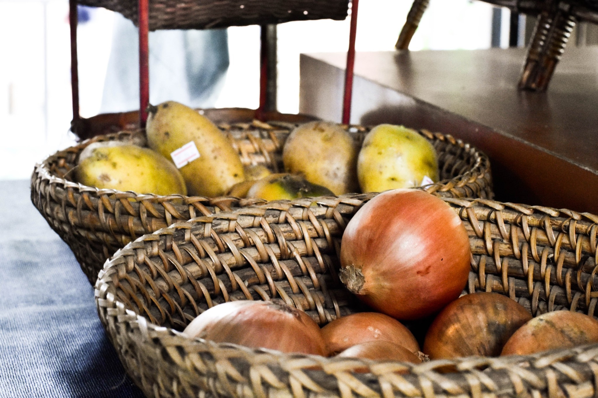

ในชีวิตประจำวันของเรา พืชผักที่เราทานนั้น เราไม่อาจรู้ได้ว่าสิ่งใดปลอดภัยหรือไม่ปลอดภัย พืชผัก วัตถุดิบสำหรับบริโภคที่วางขายตามตลาดหรือซูเปอร์มาร์เก็ตที่เราเห็นนั้น ส่วนใหญ่จะเป็นสินค้าที่ใช้สารเคมีในกระบวนการการผลิตซึ่งเป็นอันตรายต่อร่างกายเราโดยตรง ดังนั้นพวกเราชาวชุมชนปัญโญทัยจึงมีความคิดที่จะสรรหาพืชผักที่ปลอดภัยให้กับลูกหลานและครอบครัว จึงเกิดความร่วมมือและร่วมแรงร่วมใจของหลายๆฝ่าย ก่อให้เกิดร้านค้าสหกรขึ้น
ที่สหกรแห่งนี้ พ่อแม่ในชุมชนได้พากันร่วมแรงร่วมใจ คนละเล็กละน้อย ทั้งทุนทรัพย์และแรงกายแรงใจ ค่อยๆสร้างขึ้นมา มีการจัดการระบบสินค้า สรรหาผลิตภันฑ์ที่ดีมาขาย และกลุ่มกรรมการคอยตรวจสอบคุณภาพอย่างใส่ใจ ระบบการเงินที่พ่อแม่ในชุมชนได้มาช่วยติดตั้งให้ และยังมีการจัดตั้งกองทุนเพื่อพัฒนาสหกรที่เป็นบัญชีของสหกรเอง เพื่อช่วยเหลือชุมชนในยามฉุกเฉิน โดยเงินทั้งหมดได้มาจากการขายของในสหกร
จุดประสงค์หลักของโรงเรียนและเหล่าผู้ปกครองปัญโญทัย คือเพื่อให้ชุมชนของเราเติบโตอย่างมีคุณภาพ เด็กๆได้ทานอาหารที่ปลอดภัยและดีกับสุขภาพ นอกจากนี้ยังเป็นการสนับสนุนเกษตรกรที่ทำเกษตรปลอดสารพิษ และไร่ออร์แกนิค เพราะการที่จะปลูกผักปลอดสารพิษในเวลานี้จะต้องใช้การดูแลเอาใจใส่มากเป็นพิเศษ รวมถึงได้ผลผลิตที่มีจำนวนน้อยเมื่อเทียบกับการเกษตรแบบปกติที่ใช้สารเคมี ทำให้บางครั้งมีราคาแพง ซึ่งทางชุมชนเราก็รับมาขายในราคาที่เป็นกันเอง ทั้งเพื่อชุมชนของเราและเกษตรกร และหวังว่าจะทำให้เกษตรกรส่วนใหญ่ที่ยังคงใส่สารพิษเพื่อเร่งการผลิตนั้น หันมามองและผลิต ผลผลิตที่เป็นออร์แกนิคมากขึ้นในอนาคต
ชื่อสหกรเป็นชื่อที่ตั้งใจสื่อความหมายว่าเป็นสิ่งที่มาจากการร่วมแรงร่วมใจของทุกคนในชุมชนและเป็นเจ้าของร่วมกันหลายๆมือช่วยกันสร้างและประคองร้านค้าของชุมชนให้เติบโตไปอย่างมั่นคง
จากความคิดที่จะมีสถานที่จำหน่ายอาหารอินทรีย์เพื่อเป็นประโยชน์กับชุมชน ผู้ปกครองจึงมาร่วมมือและช่วยเหลือกัน เงินทุนที่มีนั้น เกิดจากการที่ผู้ปกครองนั้นร่วมมือกันระดมทุน เพื่อใช้ในการก่อตั้งและดำเนินงานต่างๆของสหกร
สหกรนั้น ไม่ได้ต้องการที่จะเพิ่มสาขาไปในที่อื่นๆ หมอพรเพียงแค่หวังว่าแนวคิดจากตรงนี้ จะสามารถเป็นต้นแบบให้กับหลายๆคนที่สนใจ และนำต้นแบบจากตรงนี้ไปพัฒนาในที่ต่างๆต่อไป และยังหวังอีกด้วยว่า แนวความคิดจากตรงนี้จะเป็นจุดเล็กๆในการพัฒนาความคิดของผู้คนให้ตื่นขึ้น แล้วหันมาดูแลสุขภาพ ทั้งของตัวเองและของคนรอบข้าง หรืออาจรวมไปถึงในระดับชุมชนอีกด้วย
ผลประโยชน์ของสหกรจึงเป็นการพัฒนา มากกว่าที่เป็นการคาดหวังหรือทำเพื่อผลกำไร เพราะสุดท้ายแล้ว สิ่งที่เป็นผลกำไรของสหกรนั้นก็คือการที่ผู้คนในชุมชนมีสุขภาพที่ดียิ่งขึ้น
สหกรนั้นทำให้เห็นว่า เมื่อเราคิดจะทำสิ่งใดสิ่งหนึ่ง หากเราร่วมแรงร่วมใจ ช่วยเหลือกันคนละไม้คนละมือ สุดท้ายแล้วเราก็จะสามารถทำมันออกมาได้ในที่สุด
การบริหารจัดการสหกรในช่วงแรกนั้น แม่จีเป็นผู้ที่ช่วยดูแล เนื่องจากบ้านอยู่ใกล้ บวกกับมีจิตอาสาอยากจะร่วมสร้างสิ่งดีๆให้เกิดขึ้นในชุมชนปัญโญทัย จึงได้เข้ามาทำงานกับผู้ช่วยซึ่งทำมาตั้งแต่ช่วงที่ยังเป็นร้านกาแฟของคุณแม่แพท ต่อมาสักพักผู้ช่วยก็ลาออกไป แม่จีต้องทำงานและดูแลสหกรเพียงคนเดียว เป็นเช่นนั้นมาสักพักใหญ่ แต่เพื่อไม่ให้เป็นภาระแก่คนเพียงคนเดียว หมอพรจึงเรียกให้มีการประชุมระหว่างกลุ่มผู้ปกครอง และมีการเสนอว่า ให้เปลี่ยนมาเป็นกลุ่มผู้ปกครองจิตอาสาช่วยกันดูแล โดยมีแม่หวาน แม่ไก่ แม่กัลย์ แม่เอ๋ แม่นุ้ย เป็นหัวเรี่ยวหัวแรงหลักในการทำงาน ซึ่งแบ่งหน้าที่กันทำงาน เช่น สั่งซื้อของ ทำบัญชี คัดเลือกสินค้า เป็นต้น
ในแต่ละวันจะมีผู้ปกครองจิตอาสาแบ่งกลุ่มกันเข้ามาช่วยดูแลสหกร
วันจันทร์ : แม่อุ้ย แม่โน๊ต แม่เล็ก แม่ยุ้ย พ่ออ๊อฟ
วันอังคาร : แม่ปู แม่ไก่ แม่นุ้ย แม่ออย แม่ยุ้ย แม่นุช
วันพุธ/เสาร์ : แม่หวาน แม่ชิ้น แม่เอ๋ แม่ปู แม่จ๊อ แม่เจี๊ยบ
วันพฤหัสบดี : แม่ขวัญ แม่กัล แม่กิ๊ง แม่ปุ๋ย พ่อเก่ง
วันศุกร์ : แม่หนู แม่มร แม่เพชร
ซึ่งนอกจากการช่วยขายของหน้าร้านแล้ว กลุ่มผู้ปกครองยังช่วยกันทำงานในส่วนของการบริหารจัดการภายในสหกรด้วย
ในการดูแลเช่นนี้บางครั้งก็เกิดปัญหาในการสื่อสารและประสานงานระหว่างกลุ่ม บางครั้งผู้ปกครองที่เป็นจิตอาสาก็ติดงานมาไม่ได้ แม้ช่วงหลังมานี้เริ่มลงตัวและเป็นระบบมากขึ้น แต่ก็ยังต้องการคนมาช่วยอีกมาก
“เพราะสหกรเป็นส่วนหนึ่งของชุมชนเราทุกคนจึงเป็นส่วนสำคัญในการทำให้สหกรก้าวหน้าและพัฒนา”
สหกรเป็นร้านค้าขายผลิตภัณฑ์-วัตถุดิบที่เป็นออร์แกนิค ในวันปกติจะมีผู้คนเข้ามาซื้อของเป็นประจำอยู่เรื่อยๆเนื่องจากไว้ใจในคุณภาพของสินค้าของสหกรที่ผู้ปกครองหลายๆท่านได้ช่วยคัดสรรอย่างพิถีพิถัน แต่อาจเป็นที่สงสัยกันว่าทำไมสินค้าบางอย่างดูราคาสูงกว่าทั่วไปที่ขายตามท้องตลาด ตั้งแต่เริ่มต้นแม่ๆได้เลือกการนำสินค้าเข้ามาขายโดยการนำสินค้าที่โรงเรียนใช้เป็นหลัก และเริ่มขยับขยายมาเป็นของใช้ในครัวเรือนทั่วๆไป และสุดท้ายจะเลือกเน้นอาหารเป็นพิเศษเพราะเป็นของที่เข้าร่างกายโดยตรง ในการเลือกแหล่งสินค้าจะได้รับข้อมูลผ่านทางโรงเรียน โดยจะมีกลุ่มผู้ปกครองเข้าไปตรวจสอบพูดคุยที่มาที่ไปของสินค้าถึงแหล่งผลิต เช่นผัก ที่ต้องเริ่มดูจากเมล็ดพันธุ์ พื้นดิน ว่าปลอดสารเคมีจริงๆ แม้กระทั่งปุ๋ยที่ต้องมองลึกลงไปถึงอาหารที่สัตว์กินเข้าไปก่อนจะออกมาเป็นมูลที่เป็นส่วนผสมของปุ๋ย สิ่งสำคัญอีกสิ่งคือน้ำที่ใช้ในการเกษตร โดยจะต้องเป็นน้ำบาดาลเท่านั้น ไม่ใช่น้ำจากแหล่งอื่นที่จะมีสารปนเปื้อน และต้องตรวจสอบพื้นที่โดยรอบข้างไร่ว่าไม่มีการใช้สารเคมีจริงๆ การตรวจสอบเนื้อสัตว์ จะเริ่มตรวจสอบว่าเป็นสายพันธุ์ใด ดูอาหารที่สัตว์กินเข้าไปโดยย้อนไปถึงที่มาของพืชว่าเป็นออร์แกนิคหรือไม่ ตรวจอย่างละเอียดเช่นเดียวกับการเลือกสินค้าผัก และแน่นอนว่าสัตว์ต้องไม่ได้รับยาหรือสารเคมีใดๆ ที่สำคัญสัตว์จะต้องถูกเลี้ยงดูด้วยความเป็นอยู่ที่ดี อนุรักษ์ธรรมชาติ นอกจากนี้แม้กระทั้งสินค้าแปรรูปแม่ๆก็ได้ช่วยกันส่งสินค้าเข้า Lab เพื่อตรวจสอบคุณภาพก่อนจะนำมาขาย ที่ไหนที่มีแนวทางการทำงานที่มีลักษณะเพื่ออนุรักษ์ธรรมชาติ หรือตั้งใจทำให้ออร์แกนิคจริงๆ สหกรจึงจะรับมาขาย โดยบางที่ไม่ต้องมีใบรับรองออร์แกนิคมาให้ดูก็ได้ แต่ก็ต้องตรวจให้มั่นใจ
เครื่องหมายที่บ่งบอกว่าสินค้าออร์แกนิคจริงคือ IFOAM เป็นมาตรฐานสากล สินค้าหลายอย่างที่มีเครื่องหมายนี้จะมีราคาค่อนข้างสูง ซึ่งบางอย่างแม่ๆก็ต้องไปหาแหล่งสินค้าอื่นที่มีราคาถูกกว่า แต่ของบางอย่างแม้มีราคาสูงก็คุ้มค่าที่จะสั่งมา เพราะอยากให้คนที่มาซื้อได้รับสิ่งที่ดี
ผู้คนบางกลุ่มเข้าใจผิดว่า ผักปลอดภัย, ผักปลอดสาร,ผักไร้สาร และออร์แกนิคเป็นผักที่ได้รับการปลูกมาในรูปแบบเดียวกัน
1.ผักปลอดภัย เป็นผักใช้ปุ๋ยเคมี ใช้สารเคมียาฆ่าหญ้า แต่ว่า เก็บเกี่ยวในระยะปลอดภัย
2.ผักปลอดสาร ใส่ปุ๋ยเคมี แต่ไม่ใช้ยาฆ่าหญ้า
3.ผักไร้สาร ไม่ใช้ปุ๋ยหรือสารเคมีใดๆ ใช้ปุ๋ยธรรมชาติจากมูล สัตว์ แต่ไม่ได้มีการคัดเลือกใช้อาหารออร์แกนิคมา ให้สัตว์กิน
ดังนั้นกลุ่มคนที่ไม่ได้รับรู้ความต่างของผักเหล่านี้ จึงหันไปซื้อผักอื่นที่ไม่ใช่ออร์แกนิค
เพราะคิดว่าเป็นผักแบบเดียวกันแถมยังมีราคาที่ถูกกว่า จึงส่งผลให้ลูกค้าที่ต้องการซื้อผักออร์แกนิคจริงๆ เข้าถึงแหล่งได้ยากขึ้นไปอีก
-ผักผลไม้รับมาจากหลายจังหวัด เช่นผักสลัด แครอท, หอมใหญ่, บีทรูทจากไร่ยิ้มเขียว และมูลนิธิ MOA, ไร่ผักออร์แกนิค Adam Enterprise, harmony life, อำเภอสนามชัยเขต จังหวัดฉะเชิงเทรา และอื่นๆอีก คือ ลพบุรี โคราช ปทุมธานี จนไกลไปถึงเชียงใหม่ แม่ฮ่องสอน
-ผลิตภัณฑ์นมรับมาจากฟาร์ม Dairy home ปากช่อง, ยี่ห้อ Butterfly ที่ลพบุรี และกรธนาฟาร์ม ซึ่งนอกจากผลิตภัณฑ์นมแล้ว ยังรับข้าวโพดและฟักทองเพิ่มมาด้วย
-เนื้อสัตว์ออร์แกนิคจากฟาร์ม G pork ที่เลี้ยงหมูแบบหลุม ไม่ใช้สารเคมีเร่งโตใดๆ
-อาหารทะเล รับมาจากโครงการประมงพื้นบ้าน กลุ่มคนที่ทำมีเป้าหมายตั้งใจจะอนุรักษ์ธรรมชาติ เมื่อไม่มีสารเคมีปนเปื้อนในทะเล ปลาต่างๆก็ปลอดสาร ทำให้ได้รับผลประโยชน์ทั้งผู้ขายและผู้ซื้อ เนื่องจากพอเอาปลาปลอดสารไปขาย ก็มีคนซื้อและสามารถทำรายได้ให้ตัวเองเพิ่มขึ้นได้ด้วย สหกรจึงเชื่อใจหากที่ไหนมีแนวทางการทำงานที่มีลักษณะเพื่ออนุรักษ์ธรรมชาติ
-อาหารแปรรูป รับมาจากจากภาคอีสาน และหมูยอ รับจากจังหวัดราชบุรี
-เห็ด จากศิรวิชฟาร์ม จังหวัดนครนายก
สหกรจะคอยหาสินค้าใหม่ๆเข้ามาขายอยู่เรื่อยๆ ตอนนี้สินค้ามาใหม่คือน้ำผึ้งออร์แกนิค ที่มีตรา IFOAM รับประกันคุณภาพ
และสินค้าที่จะรับมาเพิ่ม มาจากไร่ วัชรวรรณ กรีนฟาร์มจังหวัดพะเยา ซึ่งขายข้าวสารเป็นหลัก และยังมีปลาสลิดขายด้วย รวมถึงผักต่างๆที่เป็นออร์แกนิค มีใบรับรองและมาตรฐาน IFOAM เช่นกัน
สินค้าอื่นๆในสหกร ส่วนใหญ่เป็นของกิน ทั้งของแห้ง ของสด ขนม และเครื่องดื่ม เครื่องปรุงรส อาหารกึ่งสำเร็จรูป เช่นเส้นบะหมี่ ที่วางขายในร้าน ก็ล้วนแต่เป็นสินค้าออร์แกนิค บางยี่ห้อเราอาจไม่เคยได้ยินชื่อ เพราะไม่ได้วางขายทั่วไป และมีขนมเช่นธัญพืชบาร์ กล้วยตาก ขนมปัง นม โยเกิร์ช นอกจากนี้ยังมีของอย่างอื่นเช่น น้ำยาล้างจาน ยาสระผม น้ำหญ้านาง ที่ไม่มีสารเคมี เรียกได้ว่าสามารถวางใจซื้อสินค้าทุกอย่างในร้านได้จริงๆ
ผลิตภัณฑ์ออร์แกนิคไม่ได้ใส่สารกันบูด ทำให้อยู่ได้ไม่นาน ดังนั้นสินค้าที่เข้ามาขายในสหกรช่วงแรกๆนั้น มีบางครั้งที่ขายไม่หมดและตกค้างเสียไป ทำให้เกิดค่าเสียหายเพิ่มขึ้น ส่งผลให้ทางสหกรต้องเพิ่มเงินต้นทุนมากขึ้น เป็นสาเหตุที่ราคาสินค้าในตอนแรกค่อนข้างแพง จนในช่วงหลังสหกรได้หาวิธีจัดเก็บรักษาความสดใหม่ที่ดีขึ้น ทำให้สามารถลดต้นทุนและราคาสินค้าได้ โดยปัจจุบันนี้ทางสหกรจะคิดกำไรไม่เกิน 30% นอกจากนั้นยังสามารถรับสินค้าอื่นๆจากผู้ปกครองมาขายได้อีกด้วย
“โอเคนะ เมื่อก่อนราคาแพงกว่านี้ แต่ตอนนี้ปรับลงมาแล้ว จึงสมน้ำสมเนื้อดี”
“ราคาเหรอ ถ้าดูจากข้างนอกบางอย่างก็ต้องแพงกว่า แต่ของข้างนอกก็ไม่รู้ว่าไว้ใจได้มั้ย”
“ก็ไม่ต่างกันหรอก ก็จะซื้อของที่สหกรมี ถ้าไม่มีถึงค่อยซื้อของจากข้างนอกมาเสริม”
“ไม่ได้สังเกตว่าแตกต่างกัน คือราคาของออร์แกนิคไม่ค่อยต่างกัน.... แต่ว่าเราเชื่อของตรงนี้มากกว่า ด้วยความที่ผู้ปกครองเข้าไปดูว่าผักได้มายังไง และเข้าไปเจอหน่วยงานต่างๆที่ทำมา จึงไว้ใจได้มากกว่า”
“ราคาของก็มีต่างจากข้างนอกบ้าง ถูกกว่าบ้างแพงกว่าบ้าง อย่างเช่นเนื้อสัตว์จะแพงกว่าข้างนอก แต่ถ้าเป็นน้ำมันมะพร้าวยี่ห้อเดียวกัน ของที่นี่จะถูกกว่าไม่เกิน 5% ราคาของมันก็เฉลี่ยๆกัน”
“ปกติคุณแม่ก็ซื้อเรื่อยๆนะ ซื้อวัตถุดิบทำอาหาร พยายามจะซื้อที่นี่เพราะจะได้ของออร์แกนิค คุณภาพของที่นี่ค่อนข้างดีกว่าข้างนอก ราคาก็ถือว่าโอเค ยอมรับได้ แต่เพราะที่บ้านคนเยอะ อยู่กันสิบกว่าคน บางครั้งของมันก็ไม่พอ และไม่ค่อยหลากหลาย อยากให้มีไก่มีอะไรบ้าง แล้วก็คิดว่าลงชื่อไปว่าอยากได้อะไรบ้างไปเลยก็คงดี เพราะทุกวันนี้เหมือนเวลามาก็ต้องคอยลุ้นว่าจะมีอะไรบ้าง”
“ก็ดีอยู่แล้ว ไม่มีที่ต้องปรับปรุงอะไร”
“ของยังไม่หลากหลายนะ คือต้องซื้อเพิ่มเติมจากข้างนอก และก็แคบไปหน่อยเวลามีคนเยอะๆ”
“ก็ดีแล้วนะ อยากให้เขาเปิดในวันหยุด (หัวเราะ)....อ้อ! ที่อยากให้มีคือ ถ้าหากเราสามารถประชาสัมพันธ์สหกรเราตามหมู่บ้านแถบนี้ได้ หรืออาจจะไม่ใช่แค่ในซอยวัดพรพระร่วงฯเท่านั้น คนก็จะมาและมันจะเป็นประโยชน์กับเขา ด้วยระยะทางที่ไม่ไกล บางทีเราอาจจะสามารถขยายบริการเพิ่มขึ้นมา เป็นไปได้ที่พวกเขาจะหาแหล่งซื้อของได้ง่ายขึ้นและเขาจะได้รู้ว่าโรงเรียนเราทำอะไรบ้าง”
“เอาตามตรงนะคะ ครั้งแรกที่เข้าไปซื้อมี ความรู้สึกเกร็งมากเพราะรู้สึกเกรงใจ เพราะ เพิ่งมาใหม่จึงไม่รู้ระบบการขายของสหกร ไม่รู้ว่าหยิบของได้เลยไหม แล้วจะคิดเงินกับใคร และทุกคนดูรู้จักกันอยู่แล้ว ก็จะรู้สึกอึดอัด”
“พอเปลี่ยนระบบเป็นจิตอาสา ก็เริ่มไม่ค่อยขึ้นไปซื้อแล้ว เพราะบางทีคนขายไม่ค่อยยิ้มแย้มเลยไม่ค่อยกล้าซื้อ แต่บางทีก็เจอคนที่ยิ้มแย้มก็ดีมากค่ะ”
“อยากให้ สหกรเขียนอธิบายเกี่ยวกับวิธีซื้อ เช่นหยิบของยังไง คิดเงินที่ไหน บางทียืนรออยู่นานแต่ไม่มีคนเก็บเงิน หรือให้แม่ๆช่วยเข้ามาแนะนำผู้ปกครองใหม่ๆ“
“สะดวกและมันใกล้ ซื้อจบทีเดียวกลับบ้านได้เลย ไม่ต้องแวะเยอะแยะ ที่สำคัญสามารถไว้ใจแหล่งที่มาได้”
“ราคาดี วัตถุดิบดี อยู่ใกล้ เป็นกันเองและน่ารัก แบบทุกคนเป็นเพื่อนกัน เคยช่วยแพ็คของ ช่วยอะไรนิดหน่อยตาม โอกาส”
“สิ่งที่ชอบคือมันปลอดภัยและมีคุณภาพ ทุกคนอัธยาศัยดี หลักๆที่อุดหนุนก็เพราะแม่ๆ หรือขนมที่ผู้ปกครองทำมา ก็อยากจะอุดหนุนคนกันเองด้วย”
“ชอบความเป็นกันเองของผู้ปกครอง”
“ชอบผัก-ผลไม้สด มีผักมาส่งทุกวัน มั่นใจได้ในความสด และได้อุดหนุนคนกันเอง”
“ดีใจมากเลยค่ะ ที่สหกรจะย้ายที่ เพราะแต่เดิมคนเยอะมาก ย้ายไปจะได้มีพื้นที่เยอะขึ้น และจะได้มีอาหารให้กินตอนเช้าๆเวลามาส่งลูกๆ”
หลายคนอาจสงสัยว่า ทำไมสหกรจึงจะย้ายไปสร้างในที่ดินแห่งใหม่ และจะมีอะไรเพิ่มเติมในสหกรแห่งใหม่ของเรา
สหกรแห่งเดิมที่เราใช้กันอยู่ทุกวันนี้ เดิมตั้งอยู่บนร้านกาแฟและที่ดินของผู้ปกครอง ซึ่งในตอนนี้สถานที่ไม่เพียงพอต่อการรองรับสินค้าที่เพิ่มมากขึ้นและลูกค้าที่เยอะขึ้น จึงมีการวางแผนจะย้ายสหกรไปสร้างในที่ดินแห่งใหม่ของโรงเรียน บริเวณหน้าโซนอนุบาล ริมทะเลสาบ ใกล้กับวงเวียน เพื่อการเข้าถึงที่ง่ายขึ้น โดยการก่อสร้างครั้งนี้งบประมาณที่ใช้มาจากทุนที่เก็บไว้สำหรับพัฒนาสหกรในตอนแรกตั้งไว้ว่าค่าก่อสร้างและตกแต่งทั้งหมดคือสองล้านบาท แต่ในระหว่างดำเนินการก็ได้มีการปรับให้ใช้งบประมาณน้อยลงตามความเหมาะสม คาดว่าจะแล้วเสร็จและพร้อมเปิดใช้ก่อนปิดเทอมใหญ่เดือนมีนาคม
สหกรแห่งใหม่จะมีพื้นที่ที่ใหญ่ขึ้น มีสินค้าเพิ่มมากขึ้น เพื่อรองรับชุมชนของเราที่กำลังขยายใหญ่ขึ้นและให้ทุกๆคนได้บริโภคสินค้าที่ดีและปลอดภัย นอกจากนี้ในอนาคตอาจจะมีการสร้างลานกิจกรรมและต่อเติมอาคาร workshop เพื่อมอบความรู้เกี่ยวกับวิถีออร์แกนิคให้กับคุณพ่อคุณแม่อีกด้วย
ในการวางแผนย้ายครั้งนี้ พ่อติ๊กได้เข้ามาช่วยวางผังอาคารในที่ดินใหม่ ออกแบบตัวอาคารสหกร และมีพ่อเอ๋ เข้ามาช่วยคุมงานการก่อสร้าง ส่วนการตกแต่งภายในนั้นจะมีพ่อติ๊ก พ่อแป๊ะ และแม่ไก่ รวมถึงยังมีผู้ปกครองอีกหลายท่านที่เข้ามาช่วยกันทำงานและออกความเห็นเพื่อให้สหกรแห่งใหม่ของเราออกมาดีที่สุด
เหตุผลที่พ่อติ๊กเข้ามาช่วยในการสร้างสหกรแห่งใหม่นั้น มาจากความรู้สึกว่า สหกรในปัจจุบัน ไม่ได้ตั้งอยู่ในสภาพแวดล้อมที่สอดคล้องกับการใช้งาน ด้วยความที่พ่อติ๊กมีความรู้ในด้านนี้ และเป็นผู้วางผังที่ดินแปลงใหม่ของโรงเรียนอยู่แล้ว จึงได้รับมอบหมายให้ออกแบบอาคารด้วย เพื่อปรับปรุงให้ดีขึ้น ซึ่งพ่อติ๊กก็ทำด้วยความเต็มใจ
“รู้สึกดีที่ได้ใช้ความรู้กับเวลาที่เรามีเพื่อช่วยเหลือคนอื่น”
หัวเราะ
“สิ่งที่ได้รับเป็นการตอบแทนเหรอ กาแฟฟรีเวลาคุยงานครับ”
พ่อเอ๋ก็กล่าวว่า พอรู้ข่าวว่าจะสร้างใหม่ก็อาสาที่จะเข้ามาทำ เพราะต้องการจะทำประโยชน์แก่ผู้อื่น แก่ชุมชนของเรา คุณพ่อบอกว่า เมื่อได้ทำก็รู้สึกดี และอีกเหตุผลคือ รู้สึกศรัทธาในตัวหมอพร จึงอยากเข้ามาช่วยเหลือในสิ่งที่สามารถทำได้
ในส่วนของการตกแต่งภายในของสหกรใหม่ จะมีส่วนร้านขายของกว้างขวางขึ้น เพื่อรองรับลูกค้าให้สะดวกสบายกว่าสหกรเดิมที่ค่อนข้างจะคับแคบเมื่อมีคนเยอะๆนอกจากนี้ยังมีโซนร้านอาหารที่จะมีโต๊ะให้นั่งรับประทานอาหารที่ร้านท่ามกลางบรรยากาศร่มรื่นของ ธรรมชาติริมน้ำ
ขอขอบคุณทุกการสนับสนุนของผู้ปกครองทุกท่าน